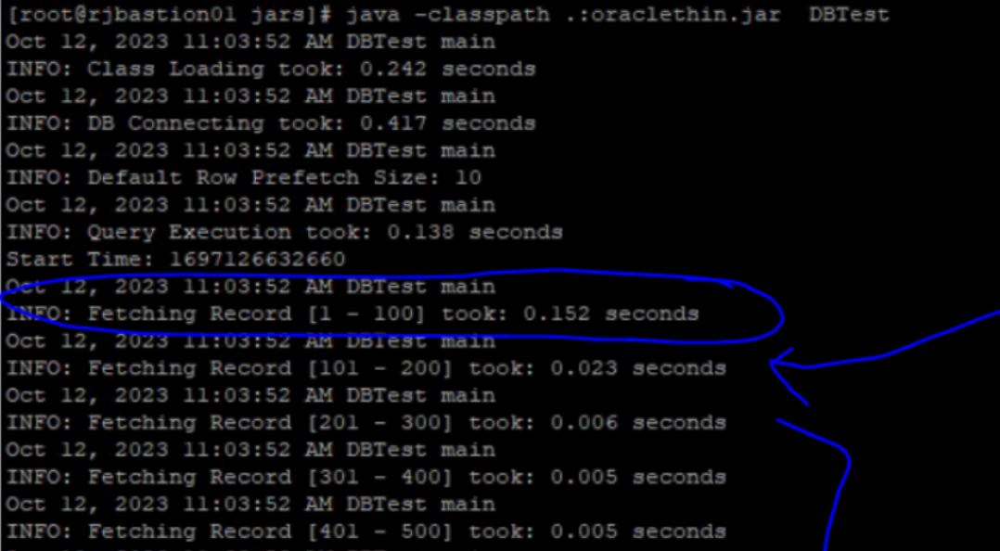
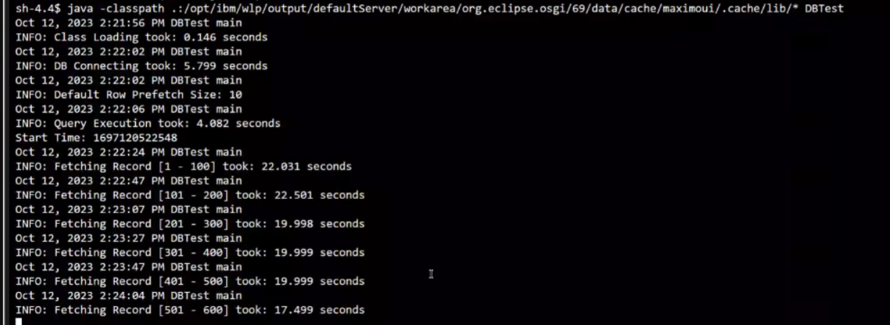

DBTest Utility in MAS Manage
notes: This utility requires Java version 11 or higher.
The DBTest Utility has two modes:
Benchmark Mode (the default): is to measure database connection time, query execution time and data fetching time for every 100 records.
Query Mode: is to display the query result with database connection time, query execution time and data fetching time.
Here is an example demonstrating how to utilize this utility in the Maximo UI pod.
Run DBTest in MAS Manage maxinst pod
- go to maxinst pod in the MAS Manage namespace -> terminal tab, then execute below commands:
cd /tmp
curl -L -v -o run-dbtest-in-maxinst-pod.sh https://ibm-mas.github.io/mas-performance/pd/download/DBTest/run-dbtest-in-maxinst-pod.sh
bash run-dbtest-in-maxinst-pod.sh
Run DBTest in Maximo UI Pod
- go to maximo ui pod -> terminal tab, then execute below commands:
# change to /tmp
cd /tmp
# download DBTest
curl -L -v -o DBTest.class https://ibm-mas.github.io/mas-performance/pd/download/DBTest/DBTest.class
# set DBURL. If this utility is in maximo UI pod, set DBURL="$MXE_DB_URL"
export DBURL="<jdbc url>" or export DBURL="$MXE_DB_URL" or export DBURL="${MXE_DB_URL}sslTrustStoreLocation=${java_truststore};sslTrustStorePassword=${java_truststore_password};"
export DBUSERNAME='<username>'
export DBPASSWORD='<password>'
export SQLQUERY='select * from maximo.maxattribute'
# execute the utility in benchmark mode
java -classpath .:$(dirname "$(find /opt | grep "oraclethin.jar" | head -n 1)")/* DBTest
Result Samples:
Given optimal network latency and a healthy database status, the expected data fetching time is less than 10 milliseconds.
Good Result: 
Bad Result: 
Execute the utility in query mode
java -classpath .:$(dirname "$(find /opt | grep "oraclethin.jar" | head -n 1)")/* DBTest -q
Output Sample:
(base) [~/javatool]$ java -classpath .:./lib/* DBTest -q
Dec. 06, 2023 11:49:47 A.M. DBTest getConnection
INFO: Loading Class took: 0.029 seconds
Dec. 06, 2023 11:49:53 A.M. DBTest getConnection
INFO: DB Connecting took: 6.55 seconds
Dec. 06, 2023 11:49:53 A.M. DBTest printResult
INFO: Query Execution took: 0.099 seconds
APP, OPTIONNAME, DESCRIPTION, ESIGENABLED, VISIBLE, ALSOGRANTS, ALSOREVOKES, PREREQUISITE, SIGOPTIONID, LANGCODE, HASLD, ROWSTAMP
---------------------------------------------------------------------------------------------------------------------------------
APIKEY, READ, Access to API Keys application, 0, 1, null, ALL, null, 200004204, EN, 0, 290874862
Dec. 06, 2023 11:49:54 A.M. DBTest printResult
INFO: Fetching Record took: 0.058 seconds